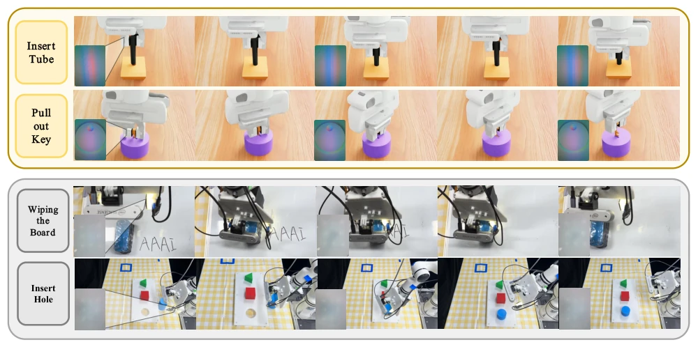
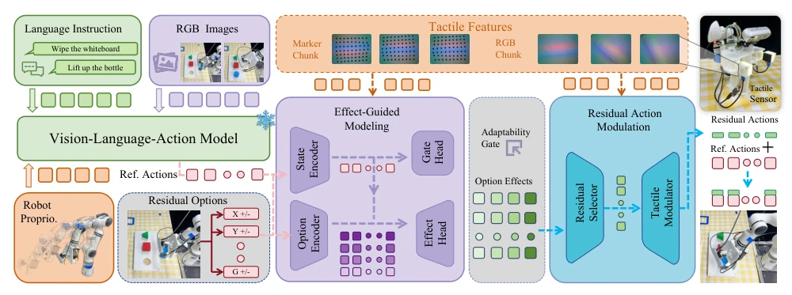
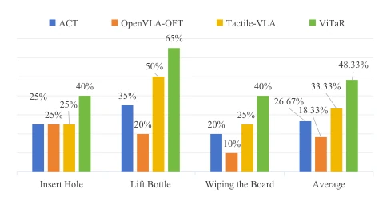
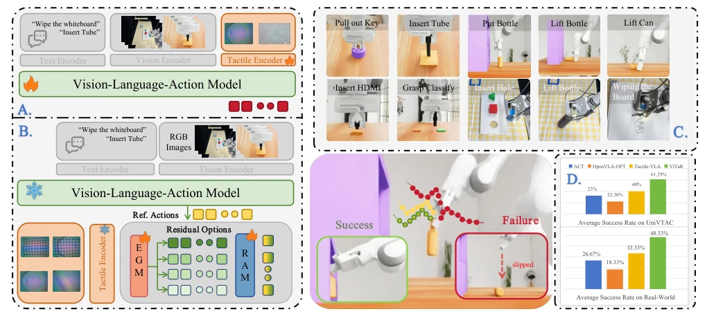
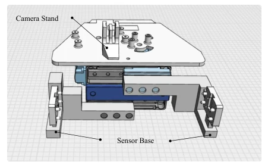
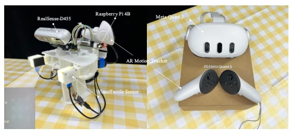
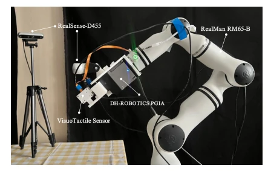
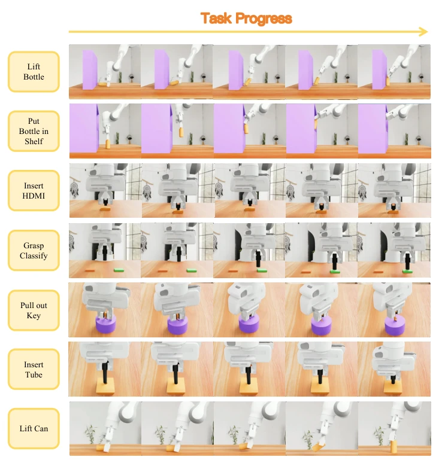
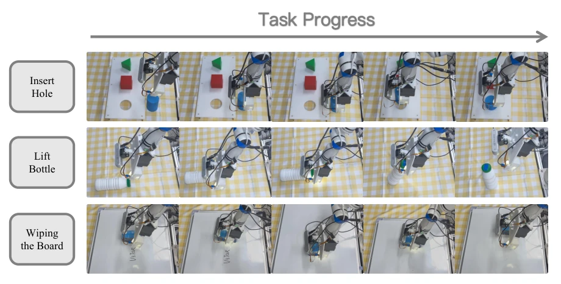

This ViTaR offers a conservative remedy for VLA's "tactile blindness". The core is downgrading tactile from "generator" to "regulator," patching on the frozen VLA. This approach avoids catastrophic forgetting caused by modifying large model parameters, after all, changing tires on a Ferrari easily causes it to fall apart. The 30.6% improvement is indeed eye-catching, but essentially it is "changing the soup but not the medicine," the semantic ceiling of the base policy is locked. Moreover, whether preference learning in simulation can withstand real-world noise remains a question mark. Overall, it is a robust "patching" solution suitable for scenarios where one does not want to retrain the base, but do not expect it to solve all philosophical problems of contact manipulation. It proves that tactile fine-tuning is feasible while maintaining pre-trained capabilities, though the ceiling is limited.
研究动机Motivation
随着 VLA 模型走向现实部署，接触密集的操作（如插入、抓取）暴露了其致命弱点：冻结的 VLA 对局部接触事件视而不见，无论接触建立还是丢失，动作都一样。现有方案要么修改 VLA 内部（如 Huang et al. 2025），面临灾难性遗忘风险；要么依赖在线强化学习（如 Ma et al. 2026），在接近失败的状态下探索极不安全。两者都赋予触觉无界的影响力，与 VLA 的泛化先验冲突。ViTaR 观察到冻结 VLA 提供了正确的语义方向，缺乏的是执行校准，因此提出触觉作为执行调节器而非生成器。这解决了现有方法要么破坏先验要么不安全的矛盾。
As VLA models move towards real-world deployment, contact-intensive operations (such as insertion, grasping) expose their fatal weakness: frozen VLA turns a blind eye to local contact events, regardless of contact establishment or loss, the action remains the same. Existing solutions either modify the VLA internally (e.g., Huang et al. 2025), facing the risk of catastrophic forgetting; or rely on online reinforcement learning (e.g., Ma et al. 2026), which is extremely unsafe to explore in states close to failure. Both endow tactile with unbounded influence, conflicting with VLA's generalization priors. ViTaR observes that frozen VLA provides the correct semantic direction, what is lacking is execution calibration, therefore proposing tactile as an execution regulator rather than a generator. This resolves the contradiction of existing methods either destroying priors or being unsafe.

Figure 4: Representative contact-rich task sequences. The upper rows illustrate UniVTAC scenarios spanning insertion, place- ment, and pulling; the lower rows show the physical Wiping the Board and Insert Hole tasks. Insets show tactile observations where they are available.
The ViTaR framework consists of a frozen VLA base and two learning components. The overall flow is: VLA outputs baseline action, EGM evaluates the improvability of contact state and ranks residual options, RAM decides which residual to execute and scales the gain. The core of EGM is branch result preference learning. Execute short-horizon branches at recovered decision points, compute task and contact result scores. Establish preference relations through pairwise comparison (positive > baseline > negative), train using weighted Bradley-Terry objective, no global calibration reward needed. It outputs state adaptability and relative effect scores. RAM converts EGM evidence into deployment decisions. Action selector decides to retain baseline action or select residual based on EGM ranking. Tactile condition scaling network predicts continuous gain based on visual-tactile summary. Residual direction is fixed, only scale magnitude, ensuring base action semantics are not changed. During training, utilize ranking as gain auxiliary objective; during deployment, use only current observation. This method guarantees the integrity of the base policy.

Figure 2: Overview of ViTaR. A frozen VLA maps language, RGB observations, and proprioception to a base action. Marker and tactile-image chunks provide local contact evidence. EGM estimates state adaptability and relative effects for the base action and residual options; RAM then selects an action choice and predicts a continuous scale for the selected residual before execution.

Figure 5: End-to-end success rates on physical-robot contact- rich tasks. Within each group, bars follow the fixed left-to- right order ACT, OpenVLA-OFT, Tactile-VLA, and ViTaR; the rightmost group reports average success.
Evaluated on UniVTAC benchmark (7 contact tasks) and physical robot (3 tasks). Baselines include ACT, OpenVLA-OFT, Tactile-VLA, etc. Main metric is end-to-end success rate. ViTaR average success rate on UniVTAC is 61.3%, an improvement of 30.6pp over frozen base. Physical tasks average 48.3%, superior to ACT and Tactile-VLA. Ablation shows, removing contact descriptor mi leads to significant recovery rate drop, removing tactile summary zi leads to success rate drop, proving both are complementary. Compared to direct residual RL (PPO/SAC), ViTaR is safer and has higher success rate. Multi-scale evaluation shows scaling selection effectively reduced local regret. Specific tasks such as Lift Bottle and Insert Tube both show significant improvement.

Figure 1: ViTaR at a glance. (A) A paradigm for introducing tactile modality into a pretrained VLA. (B) The tactile-modality integration paradigm proposed by ViTaR. (C) The seven contact-rich UniVTAC tasks and three physical-robot contact-rich tasks; task names shown in white indicate physical-robot tasks. (D) Task success rates of baselines and ViTaR across UniVTAC and physical-robot tasks; grouped bars follow the fixed left-to-right order ACT, OpenVLA-OFT, Tactile-VLA, and ViTaR.

Figure 7: Custom 3D-printed adapter for mounting the 9DTact sensing units on the DH Robotics gripper. The draw- ing shows the sensor-base and camera-stand mounting ge- ometry.
其他图片Other Figures

Figure 6: Physical demonstration collection with ExUMI and Meta Quest. The teleoperation rig records the operator inter- face, wrist visual stream, tracked motion, robot propriocep- tion, and bilateral tactile images as synchronized demonstra- tion data.

Figure 8: Physical-robot hardware used for ViTaR evaluation. The 6-DoF RealMan RM65-B manipulator (RM-65 series) carries the DH Robotics gripper with the custom 3D-printed dual-9DTact adapter. A wrist-mounted RealSense D455 and a second D455 provide ego-centric and third-person views, respectively.

Figure 9: Complete workflows for the seven simulated UniVTAC tasks. Each row shows the initialized scene and its task-progress sequence through the terminal goal state.

Figure 10: Complete physical-robot task workflows for Insert Hole, Lift Bottle, and Wiping the Board.